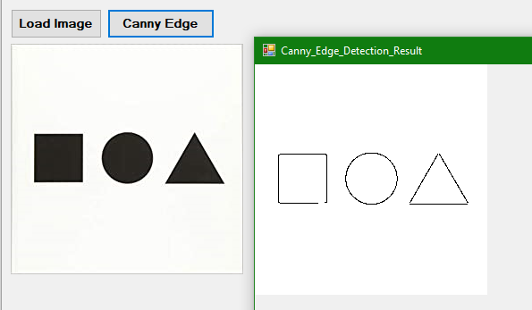
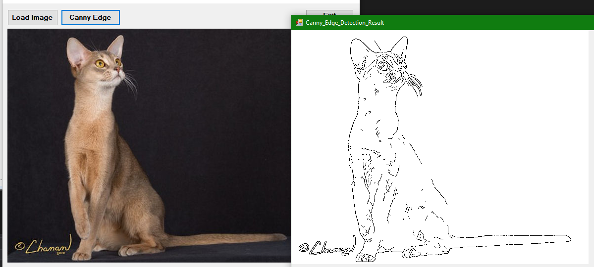

Summary
While learning C# and .NET framework, I decided to create a program that utilizes the canny edge detection algorithm. I decided to make it a bit of a challenge for myself, so I stayed away from libraries that allow simple canny edge implementations.


Logistics
First, for the Canny edge algorithm to yield the best results I converted the image into grayscale. Once the image was converted I used the Smoothing matrix multiplication of each pixel in the image to smooth out any artifacts and once again provide a cleaner surface for the Canny edge algorithm to work on. Once the image is smoothed I loop through all pixels and calculate their magnitude by using partial derivatives with respect to x and y and then finding the Manhattan distance between dx and dy. Once all pixels have their magnitude calculated I determine their gradient direction by referencing the unit circle. I made checks that categorize the direction of the gradient-based on the dx and dy values. For example, if dx > dy and dx>0 and dy>0 then we know they are between the angle of 0 and 45. Once I know the angle of the gradient it is time to check if the current pixel is a good candidate to be considered an edge. I do this by checking the corresponding neighbor pixels to the gradient direction. If the magnitude of the current pixel is greater than both of the neighbors then it is an edge candidate. I store all edge candidates into a list and only use the top 5% of the candidates with the highest magnitudes. I now loop through all pixels and check their surrounding neighbors, if one of them is an edge then promote that pixel to an edge. This cycle repeats until no changes are detected. I then create a new image with edge pixels marked black and non-edge pixels marked white. This creates an outline of edges in a picture.
Conclusion
This project was a great refresher for my math skills. I enjoyed learning about the canny edge detection algorithm and implementing it with C# and .NET framework. I hope I can use this algorithm in the future for a few other projects I have in mind.